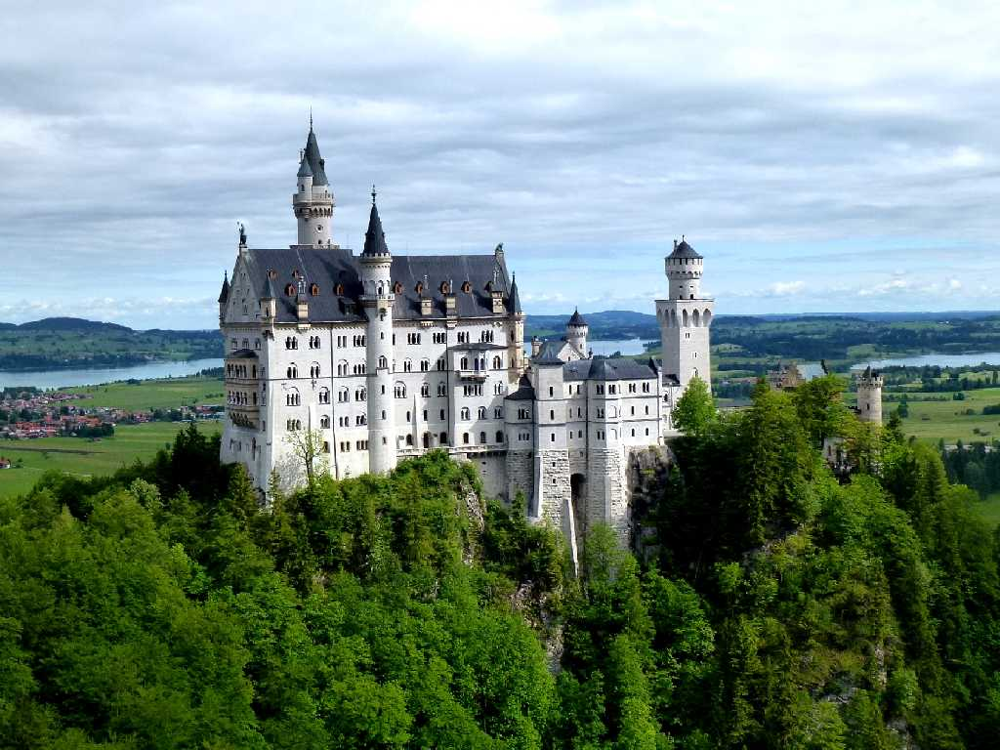
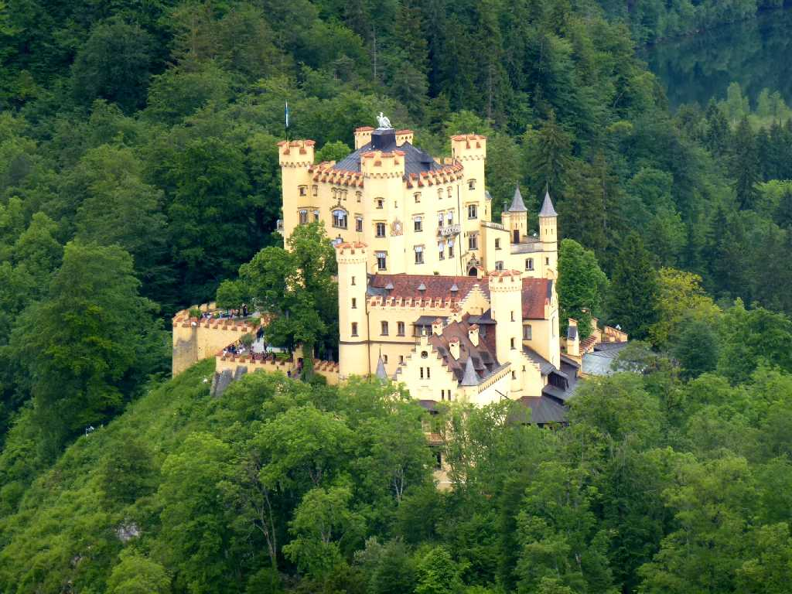
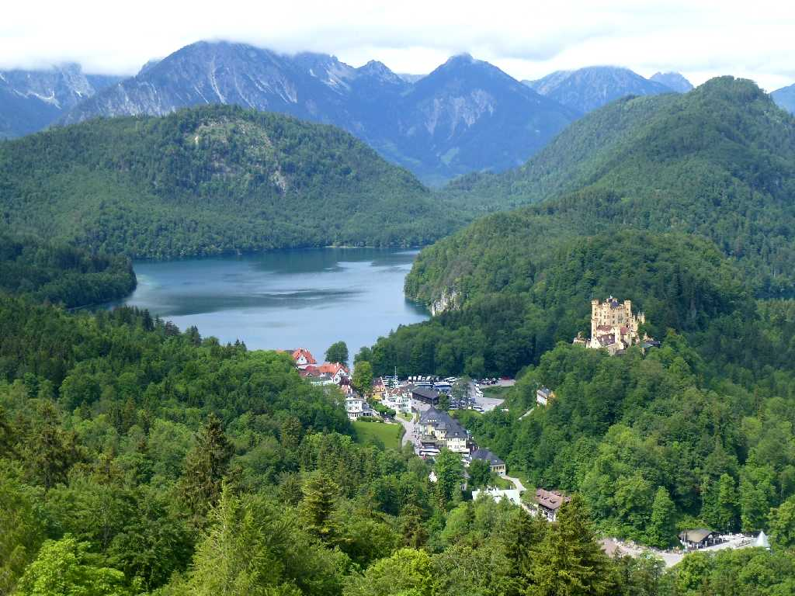

Schloss Neuschwanstein Forggensee
１９世紀にバイエルン王ルートヴィッヒⅡ世により創られたノイシュヴァンシュタイン城 背景のフォルゲン湖が城を引き立てている

Schloss Hohenschwangau
マクシミリアンⅡ世が１２世紀に創られた廃墟となっていた古城を１９世紀に改装したホーエンシュヴァンガウ城はルートヴィッヒⅡ世が幼少時代に過ごしたお城

Schloss Hohenschwangau Alpsee Neuschwanstein
ノイシュヴァンシュタイン城からアルプ湖とホーエンシュヴァンガウ城を望む
June 5 2014 Neuschwanstein
ディズニーランドの眠れる森の美女のお城のモデルとして名高い